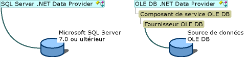
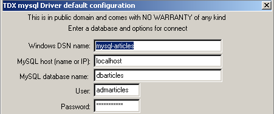

7. 数据库访问
7.1. 概述
Windows 平台上有许多数据库。应用程序通过称为驱动程序（drivers）的程序来访问这些数据库。
 |
在上图中，驱动程序提供两个接口：
- 面向应用程序的 I1 接口
- 面向数据库的 I2 接口
为了避免因迁移至不同的 B2 数据库而需要重写针对 B1 数据库编写的应用程序，我们对 I1 接口进行了标准化处理。 如果使用的是采用“标准化”驱动程序的数据库，则 B1 数据库将随附 P1 驱动程序， B2数据库将随P2驱动程序提供，且这两个驱动程序的I1接口将完全一致。因此无需重写应用程序。 例如，我们可以将数据库 ACCESS 迁移到数据库 MySQL，而无需修改应用程序。
目前有两种标准驱动程序：
- ODBC 驱动程序（Open DataBase Connectivity）
- OLE 和 DB 驱动程序（对象链接与嵌入 DataBase）
ODBC 驱动程序支持访问数据库。OLE 和 DB 驱动程序的数据源更为多样：数据库、邮件系统、通讯录等，没有限制。 只要开发人员决定，任何数据源均可通过 OLE 和 DB 驱动程序进行访问。其优势显而易见：能够以统一的方式访问多种多样的数据。
.NET 平台随附两种数据访问类：
- SQL 和 Server.NET 类
- OLE 和 Db.NET 类
第一类类可直接访问 Microsoft SGBD SQL 服务器，无需中间驱动程序。第二类类可访问 OLE DB 数据源。

.NET 平台（2002年5月）随附三个驱动程序 OLE、DB，分别对应：SQL Server、Oracle 和 Microsoft Jet（Access）。 如果要操作一个拥有 ODBC 驱动程序但没有 OLE 和 DB 驱动程序的数据库，则无法进行操作。 因此，无法使用 SGBD 和 MySQL（截至 2002 年 5 月），因为它们不提供 OLE 和 DB 驱动程序。 不过，有一系列类可以访问 ODBC 数据源，即 odbc.net 类。这些类并非 SDK 的标准配置，需要从微软网站下载。 在接下来的示例中，我们将主要使用这些 ODBC 类，因为大多数 Windows 数据库都附带此类驱动程序。 例如，以下是在 Win 2000 机器上已安装的 ODBC 驱动程序列表（“开始”菜单/“设置”/“控制面板”/“管理工具”）：

选择“数据源”图标 ODBC：

7.2. 数据源的两种操作模式
.NET 平台支持通过两种不同方式使用数据源：
- 联机模式
- 脱机模式
在联机模式下，应用程序
- 会与数据源建立连接
- 对数据源进行读写操作
- 关闭连接
在脱机模式下，应用程序
- 与数据源建立连接
- 获取数据源全部或部分数据的内存副本
- 关闭连接
- 对数据的内存副本进行读写操作
- 工作完成后，建立连接，将修改后的数据发送至数据源以供其更新，并关闭连接
在这两种情况下，耗时的主要环节都是数据的操作和更新。假设这些更新是由用户手动录入完成的，该操作可能需要数十分钟。 在此期间，在联机模式下，与数据库的连接始终保持，修改会立即同步。在脱机模式下，数据更新期间不与数据库建立连接。修改仅在内存副本中进行，待全部完成后一次性同步到数据源。
这两种方法各有何优缺点？
- 连接会消耗大量系统资源。如果存在大量并发连接，离线模式可将连接时长缩短至最低限度。拥有数千名用户的Web应用程序便是如此。
- 脱机模式的缺点在于难以处理并发更新。用户 U1 在时间点 T1 获取数据并开始修改。 在时间点 T2，用户 U2 也访问了数据源并获取了相同的数据。与此同时，用户 U1 已修改了部分数据，但尚未将其提交回数据源。 因此，U2 处理的数据中包含部分错误数据。虽然 .NET 类提供了管理此问题的解决方案，但该问题并不容易解决。
- 在联机模式下，多个用户同时更新数据通常不会造成问题。 由于与数据库的连接始终保持，这些并发更新由数据库自身进行管理。因此，当用户修改数据库中的一行数据时，Oracle 会立即锁定该行。该行将保持锁定状态，其他用户无法访问，直到修改者提交（commit）或回滚（rollback）其修改。
- 如果数据需要在网络上传输，则应选择脱机模式。该模式允许将数据快照保存在一个称为数据集（dataset）的对象中，该对象本身即代表一个独立的数据库。该对象可在网络上的不同机器之间传输。
我们首先研究联机模式。
7.3. 连接模式下的数据访问
7.3.1. 示例数据库
我们考虑一个名为 ACCESS 的数据库，其实际名称为 articles.mdb，仅包含一个名为 ARTICLES 的表，结构如下：
名称 | 类型 |
代码 | 4位商品代码 |
名称 | 名称（字符串） |
价格 | 其价格（实际价格） |
stock_actuel | 当前库存（整数） |
stock_minimum | 最低库存（整数），低于该数值时需补货 |
其初始内容如下：

我们将通过 ODBC 示例程序和OLE DB 驱动程序，以展示这两种方法的相似性，同时也因为我们拥有针对 ACCESS 的这两类驱动程序。
我们还将使用一个包含相同唯一表 ARTICLES 的数据库 MySQL DBARTICLES， 内容相同，且通过驱动程序 ODBC 访问，以此说明：为利用数据库 ACCESS 而编写的应用程序，在切换至数据库 MySQL 时无需进行修改。 用户 admarticles 可使用密码 mdparticles 访问数据库 DBARTICLES。下图显示了数据库 MySQL 的内容：
C:\mysql\bin>mysql --database=dbarticles --user=admarticles --password=mdparticles
Welcome to the MySQL monitor. Commands end with ; or \g.
Your MySQL connection id is 3 to server version: 3.23.49-max-debug
Type 'help' for help.
mysql> show tables;
+----------------------+
| Tables_in_dbarticles |
+----------------------+
| articles |
+----------------------+
1 row in set (0.01 sec)
mysql> select * from articles;
+------+--------------------------------+------+--------------+---------------+
| code | nom | prix | stock_actuel | stock_minimum |
+------+--------------------------------+------+--------------+---------------+
| a300 | vÚlo | 2500 | 10 | 5 |
| b300 | pompe | 56 | 62 | 45 |
| c300 | arc | 3500 | 10 | 20 |
| d300 | flÞches - lot de 6 | 780 | 12 | 20 |
| e300 | combinaison de plongÚe | 2800 | 34 | 7 |
| f300 | bouteilles d'oxygÞne | 800 | 10 | 5 |
+------+--------------------------------+------+--------------+---------------+
6 rows in set (0.02 sec)
mysql> describe articles;
+---------------+-------------+------+-----+---------+-------+
| Field | Type | Null | Key | Default | Extra |
+---------------+-------------+------+-----+---------+-------+
| code | text | YES | | NULL | |
| nom | text | YES | | NULL | |
| prix | double | YES | | NULL | |
| stock_actuel | smallint(6) | YES | | NULL | |
| stock_minimum | smallint(6) | YES | | NULL | |
+---------------+-------------+------+-----+---------+-------+
5 rows in set (0.00 sec)
mysql> exit
Bye
要将数据库 ACCESS 定义为数据源 ODBC，请按以下步骤操作：
- 如上所述，启动数据源管理器 ODBC，并选择“用户”选项卡 DSN（DSN=数据源名称）

- 通过按钮 Add 添加数据源，指定该数据源可通过驱动程序 Access 访问，并执行 Terminer：

- 将数据源命名为 articles-access，填写任意描述，并使用 Sélectionner 按钮指定数据库中的 .mdb 文件。最后执行 OK。

新数据源随即会显示在用户数据源列表中：

若要将数据库 MySQL DBARTICLES 设置为数据源 ODBC，请按以下步骤操作：
- 按照上文所述启用数据源管理器 ODBC，并选择“用户”选项卡 DSN。 使用 Add 添加一个新的数据源，并选择 ODBC 驱动程序（来自 MySQL）。

- 执行 Terminer。随后将显示 MySQL 数据源的配置页面：
54321

- 在 (1) 中为我们的数据源 ODBC 命名
- 在 (2) 中，指定 MySQL 服务器所在的机器。 此处我们填写 localhost，表示该服务器与我们的应用程序位于同一台机器上。如果 MySQL 服务器位于远程机器 M 上，则应在此处填写该机器的名称，这样我们的应用程序无需任何修改即可使用远程数据库。
- 在 (3) 中填写数据库名称。此处数据库名为 DBARTICLES。
- 在 (4) 中填写登录名 admarticles，在 (5) 中填写密码 mdparticles。
7.3.2. 使用驱动程序 ODBC
在采用连接模式的数据库应用程序中，通常包含以下步骤：
- 连接数据库
- 向数据库发送查询 SQL
- 接收并处理这些查询的结果
- 关闭连接
步骤 2 和 3 会反复执行，而连接关闭仅在数据库操作结束时进行。这是一个相对经典的流程，如果您曾以交互方式操作过数据库，可能对此已很熟悉。 无论通过 ODBC 驱动程序还是 OLE DB 驱动程序访问数据库，这些步骤均保持一致。 下面我们以管理数据源的 .NET 类为例进行说明。 该程序名为 liste，其参数为数据源 DSN 的名称，该数据源包含表 ODBC。随后，它将显示该表的内容：
dos>liste
syntaxe : pg dsnArticles
dos>liste articles-access
----------------------------------------
code,nom,prix,stock_actuel,stock_minimum
----------------------------------------
a300 vélo 2500 10 5
b300 pompe 56 62 45
c300 arc 3500 10 20
d300 flèches - lot de 6 780 12 20
e300 combinaison de plongée 2800 34 7
f300 bouteilles d'oxygène 800 10 5
dos>liste mysql-artices
Erreur d'exploitation de la base de données (ERROR [IM002] [Microsoft][ODBC Driver Manager] Data source name not found and no default driver specified)
dos>liste mysql-articles
----------------------------------------
code,nom,prix,stock_actuel,stock_minimum
----------------------------------------
a300 vélo 2500 10 5
b300 pompe 56 62 45
c300 arc 3500 10 20
d300 flèches - lot de 6 780 12 20
e300 combinaison de plongée 2800 34 7
f300 bouteilles d'oxygène 800 10 5
从上述结果中，我们可以看到该程序同时列出了数据库 ACCESS 和 MySQL 的内容。现在让我们来研究一下该程序的代码：
' 选项
Option Explicit On
Option Strict On
' 命名空间
Imports System
Imports System.Data
Imports Microsoft.Data.Odbc
Imports Microsoft.VisualBasic
Module db1
Sub main(ByVal args As String())
' 控制台应用程序
' 显示数据库 DSN 中表 ARTICLES 的内容
' 其名称作为参数传递
Const syntaxe As String = "syntaxe : pg dsnArticles"
Const tabArticles As String = "articles" ' la table des articles
' 参数验证
' 是否有 1 个参数
If args.Length <> 1 Then
' 错误消息
Console.Error.WriteLine(syntaxe)
' 结束
Environment.Exit(1)
End If
' 获取参数
Dim dsnArticles As String = args(0) ' la base DSN
' 准备连接数据库
Dim articlesConn As OdbcConnection = Nothing ' la connexion
Dim myReader As OdbcDataReader = Nothing ' le lecteur de données
' 尝试访问数据库
Try
' 数据库连接字符串
Dim connectString As String = "DSN=" + dsnArticles + ";"
articlesConn = New OdbcConnection(connectString)
articlesConn.Open()
' 执行命令 SQL
Dim sqlText As String = "select * from " + tabArticles
Dim myOdbcCommand As New OdbcCommand(sqlText)
myOdbcCommand.Connection = articlesConn
myReader = myOdbcCommand.ExecuteReader()
' 查询检索到的表
' 显示列
Dim ligne As String = ""
Dim i As Integer
For i = 0 To (myReader.FieldCount - 1) - 1
ligne += myReader.GetName(i) + ","
Next i
ligne += myReader.GetName(i)
Console.Out.WriteLine((ControlChars.Lf + "".PadLeft(ligne.Length, "-"c) + ControlChars.Lf + ligne + ControlChars.Lf + "".PadLeft(ligne.Length, "-"c) + ControlChars.Lf))
' 显示数据
While myReader.Read()
' 处理当前行
ligne = ""
For i = 0 To myReader.FieldCount - 1
ligne += myReader(i).ToString + " "
Next i
Console.WriteLine(ligne)
End While
Catch ex As Exception
Console.Error.WriteLine(("Erreur d'exploitation de la base de données " + ex.Message + ")"))
Environment.Exit(2)
Finally
' 关闭读取器
myReader.Close()
' 关闭连接
articlesConn.Close()
End Try
End Sub
End Module
源管理类 ODBC 位于命名空间 Microsoft.Data.Odbc 中，因此我们需要导入该命名空间。此外，还有一些类位于命名空间 System.Data 中。
Imports System.Data
Imports Microsoft.Data.Odbc
程序使用的命名空间位于不同的程序集之中。使用以下命令编译程序：
dos>vbc /r:microsoft.data.odbc.dll /r:microsoft.visualbasic.dll /r:system.dll /r:system.data.dll db1.vb
7.3.2.1. 连接阶段
连接 ODBC 使用类 OdbcConnection。该类的构造函数接受一个称为连接字符串的参数。这是一个字符串，定义了建立数据库连接所需的所有参数。这些参数可能非常多，因此字符串可能很复杂。 该字符串的格式为 "param1=valeur1;param2=valeur2;...;paramj=valeurj;"。以下是 paramj 可能包含的几个参数：
将访问数据库的用户名 | |
该用户的密码 | |
数据库名称（如有）DSN | |
所访问的数据库名称 | |
如果使用数据源管理器 ODBC 将数据源定义为 ODBC，则这些参数已指定并保存。 此时只需传递参数 DSN，该参数将返回数据源的名称 DSN。此处即采用此方法：
' 准备连接数据库
Dim articlesConn As OdbcConnection = Nothing ' la connexion
Dim myReader As OdbcDataReader = Nothing ' le lecteur de données
Try
' 正在尝试访问数据库
' 数据库连接字符串
Dim connectString As String = "DSN=" + dsnArticles + ";"
articlesConn = New OdbcConnection(connectString)
articlesConn.Open()
构建完对象 OdbcConnection 后，使用方法 Open 建立连接。与数据库上的其他操作一样，此连接建立过程也可能失败。因此，访问数据库的全部代码都包含在 try-catch 中。 建立连接后，即可向数据库发出 SQL 查询。
7.3.2.2. 发送 SQL 查询
要发出 SQL 查询，我们需要一个 Command 对象，更准确地说，这里需要一个 OdbcCommand 对象，因为我们使用的是 ODBC 数据源。 OdbcCommand 类有多个构造函数：
- OdbcCommand()：创建一个空的 Command 对象。要使用它，后续需要指定各种属性：
- CommandText：待执行的 SQL 查询文本
- Connection：表示将执行查询的数据库连接的 OdbcConnection 对象
- CommandType：SQL 查询的类型。可能有三种值
- CommandType.Text：属性 CommandText 包含 SQL 查询的文本（默认值）
- CommandType.StoredProcedure：属性 CommandText 包含数据库中一个存储过程的名称
- CommandType.TableDirect：属性 CommandText 包含表 T 的名称。等同于 select * from T。仅适用于驱动程序 OLE DB。
- OdbcCommand(string sqlText)：参数 sqlText 将被赋值给属性 CommandText。 这是待执行的 SQL 查询文本。连接信息需在 Connection 属性中指定。
- OdbcCommand(string sqlText, OdbcConnection 连接) : 参数 sqlText 将赋值给属性 CommandText，参数 connexion 将赋值给属性 Connection。
要发出 SQL 请求，有两种方法：
- OdbcdataReader ExecuteReader()： 将 CommandText 中的查询 SELECT 发送至连接 Connection，并构建一个 OdbcDataReader 对象，从而访问 select 结果表中的所有行
- int ExecuteNOnQuery()：发送更新请求（INSERT、 UPDATE、DELETE）从 CommandText 发送至连接 Connection，并返回受此更新影响的行数。
在本例中，建立数据库连接后，我们发出查询 SQL SELECT 以获取表 ARTICLES 的内容：
' 正在执行命令 SQL
Dim sqlText As String = "select * from " + tabArticles
Dim myOdbcCommand As New OdbcCommand(sqlText)
myOdbcCommand.Connection = articlesConn
myReader = myOdbcCommand.ExecuteReader()
查询请求通常是以下类型的请求：
只有第一行的关键字是必填的，其余均为可选。还有其他未在此列出的关键字。
- 系统会与位于 from 关键字后面的所有表进行连接
- 仅保留位于 select 关键字后面的列
- 仅保留满足 where 关键字条件的行
- 根据 order by 关键字表达式排序后的结果行即构成查询结果。
select的查询结果是一个表。如果参考前面的ARTICLES表，并希望获取当前库存低于最低阈值的商品名称，则应编写如下语句：
若需按商品名称的字母顺序排列，则应输入：
7.3.2.3. 查询结果 SELECT 的利用
在脱机模式下，查询 SELECT 的结果是一个 DataReader 对象，此处为 OdbcDataReader 对象。该对象可用于依次获取结果中的所有行，并获取这些结果列的相关信息。 让我们来看看该类的几个属性和方法：
表的列数 | |
Item(i) 表示结果当前行中的第 i 列 | |
当前行第 i 列的值，以 XXX 类型呈现（Int16、Int32、Int64、Double、String、Boolean 等） | |
第 i 列的名称 | |
关闭对象 OdbcdataReader 并释放相关资源 | |
在结果表中向前移动一行。若无法实现则返回false。新行将成为读取器的当前行。 |
对 select 结果的处理通常是类似于文本文件的顺序处理：只能在表中向前移动，不能向后移动：
While myReader.Read()
' 获取了一行数据 - 进行处理
....
' 下一行
end while
这些说明足以理解我们示例中的以下代码：
' 处理检索到的表
' 显示列
Dim ligne As String = ""
Dim i As Integer
For i = 0 To (myReader.FieldCount - 1) - 1
ligne += myReader.GetName(i) + ","
Next i
ligne += myReader.GetName(i)
Console.Out.WriteLine((ControlChars.Lf + "".PadLeft(ligne.Length, "-"c) + ControlChars.Lf + ligne + ControlChars.Lf + "".PadLeft(ligne.Length, "-"c) + ControlChars.Lf))
' 显示数据
While myReader.Read()
' 处理当前行
ligne = ""
For i = 0 To myReader.FieldCount - 1
ligne += myReader(i).ToString + " "
Next i
Console.WriteLine(ligne)
End While
唯一的难点在于将当前行各列的值进行拼接的语句：
For i = 0 To myReader.FieldCount - 1
ligne += myReader(i).ToString + " "
Next i
表达式 *行+=myReader(i).ToString 被转换为 *行+=myReader.Item(i).ToString。ToString()，其中 Item(i) 是当前行第 i 列的值。
7.3.2.4. 资源释放
类 OdbcReader 和 OdbcConnection 都拥有一个 Close() 方法，该方法会释放与被关闭对象相关的资源。
7.3.3. 使用 OLE 驱动程序 DB
我们继续使用相同的示例，这次通过 OLE DB 驱动程序访问数据库。 .NET 平台为 ACCESS 数据库提供了此类驱动程序。因此，我们将使用与之前相同的 articles.mdb 数据库。我们在此旨在说明：即使类发生变化，概念依然不变：
- 连接由一个 OleDbConnection 对象表示
- 通过 OleDbCommand 对象发出 SQL 查询
- 若该请求为 SELECT 子句，则将返回 OleDbDataReader 对象以访问结果表中的行
这些类位于命名空间 System.Data.OleDb 中。上述程序可轻松修改以支持 OLE 和 DB 数据库：
- 将所有 OdbcXX 替换为 OleDbXX
- 修改连接字符串。对于无需登录名/密码的 ACCESS 数据库，连接字符串应为 Provider=Microsoft.JET.OLEDB.4.0;Data Source=[fichier.mdb]。 该字符串中可配置的部分是待使用的文件名 ACCESS。我们将修改程序，使其能够接受该文件名作为参数。
- 现在要导入的命名空间是 System.Data.OleDb。
我们的程序变为如下所示：
' 选项
Option Explicit On
Option Strict On
' 命名空间
Imports System
Imports System.Data
Imports Microsoft.Data.Odbc
Imports Microsoft.VisualBasic
Imports System.Data.OleDb
Module db2
Public Sub Main(ByVal args() As String)
' 控制台应用程序
' 显示数据库 DSN 中表 ARRTICLES 的内容
' 其名称作为参数传递
Const syntaxe As String = "syntaxe : pg base_access_articles"
Const tabArticles As String = "articles" ' la table des articles
' 参数验证
' 是否有 1 个参数
If args.Length <> 1 Then
' 错误消息
Console.Error.WriteLine(syntaxe)
' 结束
Environment.Exit(1)
End If
' 获取参数
Dim dbArticles As String = args(0) ' la base de données
' 准备连接数据库
Dim articlesConn As OleDbConnection = Nothing ' la connexion
Dim myReader As OleDbDataReader = Nothing ' le lecteur de données
' 尝试访问数据库
Try
' 数据库连接字符串
Dim connectString As String = "Provider=Microsoft.JET.OLEDB.4.0;Data Source=" + dbArticles + ";"
articlesConn = New OleDbConnection(connectString)
articlesConn.Open()
' 执行命令 SQL
Dim sqlText As String = "select * from " + tabArticles
Dim myOleDbCommand As New OleDbCommand(sqlText)
myOleDbCommand.Connection = articlesConn
myReader = myOleDbCommand.ExecuteReader()
' 查询检索到的表
' 显示列
Dim ligne As String = ""
Dim i As Integer
For i = 0 To (myReader.FieldCount - 1) - 1
ligne += myReader.GetName(i) + ","
Next i
ligne += myReader.GetName(i)
Console.Out.WriteLine((ControlChars.Lf + "".PadLeft(ligne.Length, "-"c) + ControlChars.Lf + ligne + ControlChars.Lf + "".PadLeft(ligne.Length, "-"c) + ControlChars.Lf))
' 显示数据
While myReader.Read()
' 处理当前行
ligne = ""
For i = 0 To myReader.FieldCount - 1
ligne += myReader(i).ToString + " "
Next i
Console.WriteLine(ligne)
End While
Catch ex As Exception
Console.Error.WriteLine(("Erreur d'exploitation de la base de données (" + ex.Message + ")"))
Environment.Exit(2)
Finally
' 关闭读取器
myReader.Close()
' 关闭连接
articlesConn.Close()
End Try
' 结束
Environment.Exit(0)
End Sub
End Module
所得结果：
dos>vbc liste.vb
E:\data\serge\MSNET\vb.net\adonet\6>dir
07/05/2002 15:09 2 325 liste.CS
07/05/2002 15:09 4 608 liste.exe
20/08/2001 11:54 86 016 ARTICLES.MDB
dos>liste articles.mdb
----------------------------------------
code,nom,prix,stock_actuel,stock_minimum
----------------------------------------
a300 vélo 2500 10 5
b300 pompe 56 62 45
c300 arc 3500 10 20
d300 flèches - lot de 6 780 12 20
e300 combinaison de plongée 2800 34 7
f300 bouteilles d'oxygène 800 10 5
7.3.4. 更新表
前面的示例仅列出了表的内容。我们将修改商品数据库管理程序，使其能够修改该数据库。该程序名为 sql。将其作为参数传递给要管理的商品数据库名称 DSN。 用户直接在键盘上输入 SQL 命令，程序会执行这些命令，如下所示，这是在 MySQL 物料数据库上获得的结果：
dos>vbc /r:microsoft.data.odbc.dll sql.vb
dos>sql mysql-articles
Requête SQL (fin pour arrêter) : select * from articles
----------------------------------------
code,nom,prix,stock_actuel,stock_minimum
----------------------------------------
a300 vélo 2500 10 5
b300 pompe 56 62 45
c300 arc 3500 10 20
d300 flèches - lot de 6 780 12 20
e300 combinaison de plongée 2800 34 7
f300 bouteilles d'oxygène 800 10 5
Requête SQL (fin pour arrêter) : select * from articles where stock_actuel<stock_minimum
----------------------------------------
code,nom,prix,stock_actuel,stock_minimum
----------------------------------------
c300 arc 3500 10 20
d300 flèches - lot de 6 780 12 20
Requête SQL (fin pour arrêter) : insert into articles values ("1","1",1,1,1)
Il y a eu 1 ligne(s) modifiée(s)
Requête SQL (fin pour arrêter) : select * from articles
----------------------------------------
code,nom,prix,stock_actuel,stock_minimum
----------------------------------------
a300 vélo 2500 10 5
b300 pompe 56 62 45
c300 arc 3500 10 20
d300 flèches - lot de 6 780 12 20
e300 combinaison de plongée 2800 34 7
f300 bouteilles d'oxygène 800 10 5
1 1 1 1 1
Requête SQL (fin pour arrêter) : update articles set nom="2" where nom="1"
Il y a eu 1 ligne(s) modifiée(s)
Requête SQL (fin pour arrêter) : select * from articles
----------------------------------------
code,nom,prix,stock_actuel,stock_minimum
----------------------------------------
a300 vélo 2500 10 5
b300 pompe 56 62 45
c300 arc 3500 10 20
d300 flèches - lot de 6 780 12 20
e300 combinaison de plongée 2800 34 7
f300 bouteilles d'oxygène 800 10 5
1 2 1 1 1
Requête SQL (fin pour arrêter) : delete from articles where code="1"
Il y a eu 1 ligne(s) modifiée(s)
Requête SQL (fin pour arrêter) : select * from articles
----------------------------------------
code,nom,prix,stock_actuel,stock_minimum
----------------------------------------
a300 vélo 2500 10 5
b300 pompe 56 62 45
c300 arc 3500 10 20
d300 flèches - lot de 6 780 12 20
e300 combinaison de plongée 2800 34 7
f300 bouteilles d'oxygène 800 10 5
Requête SQL (fin pour arrêter) : select * from articles order by nom asc
----------------------------------------
code,nom,prix,stock_actuel,stock_minimum
----------------------------------------
c300 arc 3500 10 20
f300 bouteilles d'oxygène 800 10 5
e300 combinaison de plongée 2800 34 7
d300 flèches - lot de 6 780 12 20
b300 pompe 56 62 45
a300 vélo 2500 10 5
Requête SQL (fin pour arrêter) : fin
日程安排如下：
' 选项
Option Explicit On
Option Strict On
' 命名空间
Imports System
Imports System.Data
Imports Microsoft.Data.Odbc
Imports System.Data.OleDb
Imports System.Text.RegularExpressions
Imports System.Collections
Imports Microsoft.VisualBasic
Module db3
Public Sub Main(ByVal args() As String)
' 控制台应用程序
' 在
' ARTICLES 数据库中的一张表，该数据库的名称作为参数传递
Const syntaxe As String = "syntaxe : pg dsnArticles"
' 参数验证
' 是否有2个参数
If args.Length <> 1 Then
' 错误信息
Console.Error.WriteLine(syntaxe)
' 结束
Environment.Exit(1)
End If 'if
' 获取参数
Dim dsnArticles As String = args(0)
' 数据库连接字符串
Dim connectString As String = "DSN=" + dsnArticles + ";"
' 准备连接数据库
Dim articlesConn As OdbcConnection = Nothing
Dim sqlCommand As OdbcCommand = Nothing
Try
' 尝试访问数据库
articlesConn = New OdbcConnection(connectString)
articlesConn.Open()
' 创建一个命令对象
sqlCommand = New OdbcCommand("", articlesConn)
'try
Catch ex As Exception
' 错误消息
Console.Error.WriteLine(("Erreur d'exploitation de la base de données (" + ex.Message + ")"))
' 释放资源
Try
articlesConn.Close()
Catch
End Try
Environment.Exit(2)
End Try 'catch
' 构建已接受的 SQL 命令字典
Dim commandesSQL() As String = {"select", "insert", "update", "delete"}
Dim dicoCommandes As New Hashtable
Dim i As Integer
For i = 0 To commandesSQL.Length - 1
dicoCommandes.Add(commandesSQL(i), True)
Next i
' 读取并执行通过键盘输入的命令 SQL
Dim requête As String = Nothing ' texte de la requête SQL
Dim champs() As String ' les champs de la requête
Dim modèle As New Regex("\s+")
' 键盘输入命令的读取-执行循环
While True
' 初始阶段无错误
Dim erreur As Boolean = False
' 请求
Console.Out.Write(ControlChars.Lf + "Requête SQL (fin pour arrêter) : ")
requête = Console.In.ReadLine().Trim().ToLower()
' 结束了吗？
If requête = "fin" Then
Exit While
End If
' 将请求拆分为字段
champs = modèle.Split(requête)
' 请求有效？
If champs.Length = 0 Or Not dicoCommandes.ContainsKey(champs(0)) Then
' 错误消息
Console.Error.WriteLine("Requête invalide. Utilisez select, insert, update, delete")
' 下一个请求
erreur = True
End If
If Not erreur Then
' 准备 Command 对象以执行请求
sqlCommand.CommandText = requête
' 正在执行请求
Try
If champs(0) = "select" Then
executeSelect(sqlCommand)
Else
executeUpdate(sqlCommand)
End If
Catch ex As Exception
' 错误消息
Console.Error.WriteLine(("Erreur d'exploitation de la base de données (" + ex.Message + ")"))
End Try
End If
End While
' 释放资源
Try
articlesConn.Close()
Catch
End Try
Environment.Exit(0)
End Sub
' 执行更新请求
Sub executeUpdate(ByVal sqlCommand As OdbcCommand)
' 执行 sqlCommand，更新请求
Dim nbLignes As Integer = sqlCommand.ExecuteNonQuery()
' 显示
Console.Out.WriteLine(("Il y a eu " & nbLignes & " ligne(s) modifiée(s)"))
End Sub
' 执行 Select 查询
Sub executeSelect(ByVal sqlCommand As OdbcCommand)
' 执行 sqlCommand，Select 查询
Dim myReader As OdbcDataReader = sqlCommand.ExecuteReader()
' 对检索到的表进行处理
' 显示列
Dim ligne As String = ""
Dim i As Integer
For i = 0 To (myReader.FieldCount - 1) - 1
ligne += myReader.GetName(i) + ","
Next i
ligne += myReader.GetName(i)
Console.Out.WriteLine((ControlChars.Lf + "".PadLeft(ligne.Length, "-"c) + ControlChars.Lf + ligne + ControlChars.Lf + "".PadLeft(ligne.Length, "-"c) + ControlChars.Lf))
' 显示数据
While myReader.Read()
' 处理当前行
ligne = ""
For i = 0 To myReader.FieldCount - 1
ligne += myReader(i).ToString + " "
Next i
' 显示
Console.WriteLine(ligne)
End While
' 释放资源
myReader.Close()
End Sub
End Module
此处仅对与前一个程序相比的新内容进行说明：
- 我们构建了一个支持的SQL命令词典：
' 构建已接受的 SQL 命令字典
Dim commandesSQL() As String = {"select", "insert", "update", "delete"}
Dim dicoCommandes As New Hashtable
Dim i As Integer
For i = 0 To commandesSQL.Length - 1
dicoCommandes.Add(commandesSQL(i), True)
Next i
这使我们能够轻松验证输入的查询中的第一个单词（字段[0]）是否属于四条被接受的命令之一：
' 查询有效吗？
If champs.Length = 0 Or Not dicoCommandes.ContainsKey(champs(0)) Then
' 错误消息
Console.Error.WriteLine("Requête invalide. Utilisez select, insert, update, delete")
' 下一个查询
erreur = True
End If 'if
- 此前，该查询已使用类 RegEx 中的方法 Split 拆分为字段：
Dim modèle As New Regex("\s+")
....
' 将查询拆分为字段
champs = modèle.Split(requête)
查询中的单词之间可以使用任意数量的空格分隔。
- 执行查询 select 所使用的方法与执行更新查询（insert、update、delete）所使用的方法不同。 因此，必须进行测试，并针对这两种情况分别执行不同的函数：
' 准备 Command 对象以执行查询
sqlCommand.CommandText = requête
' 执行查询
Try
If champs(0) = "select" Then
executeSelect(sqlCommand)
Else
executeUpdate(sqlCommand)
End If 'try
Catch ex As Exception
' 错误消息
Console.Error.WriteLine(("Erreur d'exploitation de la base de données (" + ex.Message + ")"))
End Try
执行查询 SQL 可能会引发异常，此处对此异常进行了处理。
- 函数 executeSelect 综合了前面示例中的所有内容。
- 函数 executeUpdate 使用类 OdbcCommand 中的方法 ExecuteNonQuery，该方法返回受该命令影响的行数。
7.3.5. IMPOTS
我们继续使用上一章中构建的 impôt 对象：
' 选项
Option Strict On
Option Explicit On
' 命名空间
Imports System
Public Class impôt
' 计算税款所需的数据
' 来自外部来源
Private limites(), coeffR(), coeffN() As Decimal
' 生成器
Public Sub New(ByVal LIMITES() As Decimal, ByVal COEFFR() As Decimal, ByVal COEFFN() As Decimal)
' 验证这 3 个表是否大小相同
Dim OK As Boolean = LIMITES.Length = COEFFR.Length And LIMITES.Length = COEFFN.Length
If Not OK Then
Throw New Exception("Les 3 tableaux fournis n'ont pas la même taille(" & LIMITES.Length & "," & COEFFR.Length & "," & COEFFN.Length & ")")
End If
' 没问题
Me.limites = LIMITES
Me.coeffR = COEFFR
Me.coeffN = COEFFN
End Sub
' 计算税额
Public Function calculer(ByVal marié As Boolean, ByVal nbEnfants As Integer, ByVal salaire As Integer) As Long
' 计算份额数
Dim nbParts As Decimal
If marié Then
nbParts = CDec(nbEnfants) / 2 + 2
Else
nbParts = CDec(nbEnfants) / 2 + 1
End If
If nbEnfants >= 3 Then
nbParts += 0.5D
End If
' 计算应税收入及家庭系数
Dim revenu As Decimal = 0.72D * salaire
Dim QF As Decimal = revenu / nbParts
' 税额计算
limites((limites.Length - 1)) = QF + 1
Dim i As Integer = 0
While QF > limites(i)
i += 1
End While
' 返回结果
Return CLng(revenu * coeffR(i) - nbParts * coeffN(i))
End Function
End Class
我们为其添加了一个新的构造函数，用于从数据库 ODBC 初始化数组 limites、coeffR、coeffN：
Imports System.Data
Imports Microsoft.Data.Odbc
Imports System.Collections
...
' 生成器 2
Public Sub New(ByVal DSNimpots As String, ByVal Timpots As String, ByVal colLimites As String, ByVal colCoeffR As String, ByVal colCoeffN As String)
' 根据
' 基于数据库 ODBC DSNimpots 中 Timpots 表的内容
' colLimites、colCoeffR、colCoeffN 是该表的三个列
'可能会引发异常
Dim connectString As String = "DSN=" + DSNimpots + ";" ' chaîne de connexion à la base
Dim impotsConn As OdbcConnection = Nothing ' la connexion
Dim sqlCommand As OdbcCommand = Nothing ' la commande SQL
' 查询 SELECT
Dim selectCommand As String = "select " + colLimites + "," + colCoeffR + "," + colCoeffN + " from " + Timpots
' 用于检索数据的表
Dim tLimites As New ArrayList
Dim tCoeffR As New ArrayList
Dim tCoeffN As New ArrayList
' 尝试访问数据库
impotsConn = New OdbcConnection(connectString)
impotsConn.Open()
' 正在创建一个命令对象
sqlCommand = New OdbcCommand(selectCommand, impotsConn)
' 正在执行查询
Dim myReader As OdbcDataReader = sqlCommand.ExecuteReader()
' 对检索到的表进行处理
While myReader.Read()
' 将当前行数据放入数组
tLimites.Add(myReader(colLimites))
tCoeffR.Add(myReader(colCoeffR))
tCoeffN.Add(myReader(colCoeffN))
End While
' 释放资源
myReader.Close()
impotsConn.Close()
' 将动态数组转换为静态数组
Me.limites = New Decimal(tLimites.Count) {}
Me.coeffR = New Decimal(tLimites.Count) {}
Me.coeffN = New Decimal(tLimites.Count) {}
Dim i As Integer
For i = 0 To tLimites.Count - 1
limites(i) = Decimal.Parse(tLimites(i).ToString())
coeffR(i) = Decimal.Parse(tCoeffR(i).ToString())
coeffN(i) = Decimal.Parse(tCoeffN(i).ToString())
Next i
End Sub
测试程序如下：它接收作为参数的参数，并将这些参数传递给类impôt的构造函数。在构建impôt对象后，它会计算应缴税额：
Option Explicit On
Option Strict On
' 命名空间
Imports System
Imports Microsoft.VisualBasic
' 测试页面
Module testimpots
Sub Main(ByVal arguments() As String)
' 交互式税款计算程序
' 用户通过键盘输入三项数据：已婚 nbEnfants 工资
' 程序随后显示应缴税额
Const syntaxe1 As String = "pg DSNimpots tabImpots colLimites colCoeffR colCoeffN"
Const syntaxe2 As String = "syntaxe : marié nbEnfants salaire" + ControlChars.Lf + "marié : o pour marié, n pour non marié" + ControlChars.Lf + "nbEnfants : nombre d'enfants" + ControlChars.Lf + "salaire : salaire annuel en F"
' 验证程序参数
If arguments.Length <> 5 Then
' 错误信息
Console.Error.WriteLine(syntaxe1)
' 结束
Environment.Exit(1)
End If 'if
' 获取参数
Dim DSNimpots As String = arguments(0)
Dim tabImpots As String = arguments(1)
Dim colLimites As String = arguments(2)
Dim colCoeffR As String = arguments(3)
Dim colCoeffN As String = arguments(4)
' 创建税款对象
Dim objImpôt As impôt = Nothing
Try
objImpôt = New impôt(DSNimpots, tabImpots, colLimites, colCoeffR, colCoeffN)
Catch ex As Exception
Console.Error.WriteLine(("L'erreur suivante s'est produite : " + ex.Message))
Environment.Exit(2)
End Try
' 无限循环
While True
' 初始时无错误
Dim erreur As Boolean = False
' 请求税费计算参数
Console.Out.Write("Paramètres du calcul de l'impôt au format marié nbEnfants salaire ou rien pour arrêter :")
Dim paramètres As String = Console.In.ReadLine().Trim()
' 需要采取什么措施？
If paramètres Is Nothing Or paramètres = "" Then
Exit While
End If
' 验证输入行中的参数数量
Dim args As String() = paramètres.Split(Nothing)
Dim nbParamètres As Integer = args.Length
If nbParamètres <> 3 Then
Console.Error.WriteLine(syntaxe2)
erreur = True
End If
Dim marié As String
Dim nbEnfants As Integer
Dim salaire As Integer
If Not erreur Then
' 参数有效性验证
' 已婚
marié = args(0).ToLower()
If marié <> "o" And marié <> "n" Then
Console.Error.WriteLine((syntaxe2 + ControlChars.Lf + "Argument marié incorrect : tapez o ou n"))
erreur = True
End If
' nbEnfants
nbEnfants = 0
Try
nbEnfants = Integer.Parse(args(1))
If nbEnfants < 0 Then
Throw New Exception
End If
Catch
Console.Error.WriteLine(syntaxe2 + "\nArgument nbEnfants incorrect : tapez un entier positif ou nul")
erreur = True
End Try
' 工资
salaire = 0
Try
salaire = Integer.Parse(args(2))
If salaire < 0 Then
Throw New Exception
End If
Catch
Console.Error.WriteLine(syntaxe2 + "\nArgument salaire incorrect : tapez un entier positif ou nul")
erreur = True
End Try
End If
If Not erreur Then
' 参数正确 - 计算税款
Console.Out.WriteLine(("impôt=" & objImpôt.calculer(marié = "o", nbEnfants, salaire).ToString + " F"))
End If
End While
End Sub
End Module
所使用的数据库是名为 DSN mysql-impots 的 MySQL 数据库：
C:\mysql\bin>mysql --database=impots --user=admimpots --password=mdpimpots
Welcome to the MySQL monitor. Commands end with ; or \g.
Your MySQL connection id is 5 to server version: 3.23.49-max-debug
Type 'help' for help.
mysql> show tables;
+------------------+
| Tables_in_impots |
+------------------+
| timpots |
+------------------+
mysql> select * from timpots;
+---------+--------+---------+
| limites | coeffR | coeffN |
+---------+--------+---------+
| 12620 | 0 | 0 |
| 13190 | 0.05 | 631 |
| 15640 | 0.1 | 1290.5 |
| 24740 | 0.15 | 2072.5 |
| 31810 | 0.2 | 3309.5 |
| 39970 | 0.25 | 4900 |
| 48360 | 0.3 | 6898 |
| 55790 | 0.35 | 9316.5 |
| 92970 | 0.4 | 12106 |
| 127860 | 0.45 | 16754 |
| 151250 | 0.5 | 23147.5 |
| 172040 | 0.55 | 30710 |
| 195000 | 0.6 | 39312 |
| 0 | 0.65 | 49062 |
+---------+--------+---------+
运行测试程序得到以下结果：
dos>D:\data\devel\vbnet\poly\chap6\impots>vbc /r:system.data.dll /r:microsoft.data.odbc.dll /r:system.dll /t:library impots.vb
dos>vbc /r:impots.dll testimpots.vb
dos>test mysql-impots timpots limites coeffr coeffn
Paramètres du calcul de l'impôt au format marié nbEnfants salaire ou rien pour arrêter :o 2 200000
impôt=22506 F
Paramètres du calcul de l'impôt au format marié nbEnfants salaire ou rien pour arrêter :n 2 200000
impôt=33388 F
Paramètres du calcul de l'impôt au format marié nbEnfants salaire ou rien pour arrêter :o 3 200000
impôt=16400 F
Paramètres du calcul de l'impôt au format marié nbEnfants salaire ou rien pour arrêter :n 3 300000
impôt=50082 F
Paramètres du calcul de l'impôt au format marié nbEnfants salaire ou rien pour arrêter :n 3 200000
impôt=22506 F
Paramètres du calcul de l'impôt au format marié nbEnfants salaire ou rien pour arrêter :